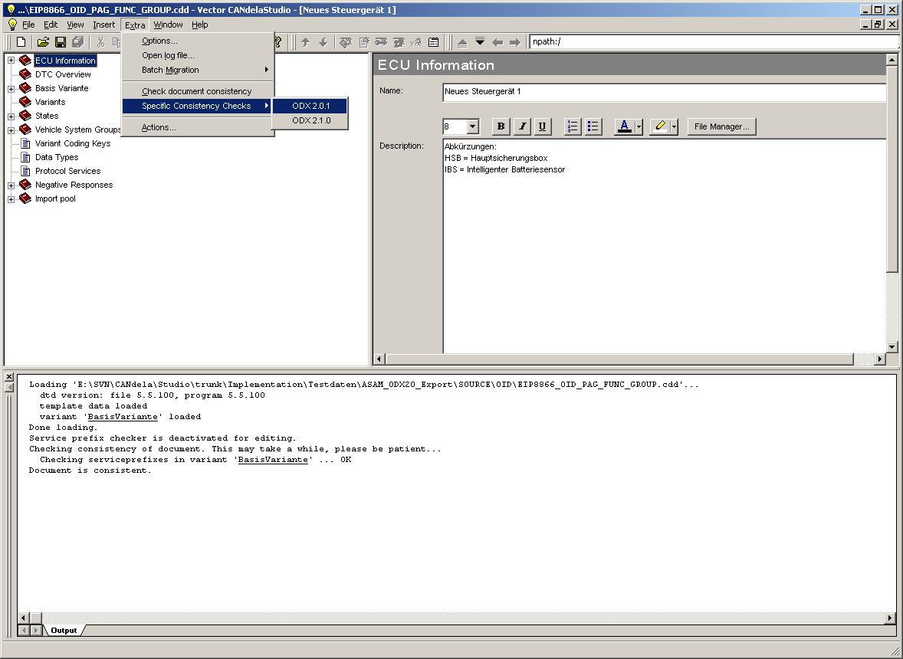

With CANdela-Studio-5.5 Release the possibility exists to check the ODX-Compliance of a cdd that is to be exported.

Menu item for OdxCompliance check
When executing the check, basically all checks that are implemented in the OdxExport itself are executed. Thereby a user gets information about corrections that should be done before the OdxExport.